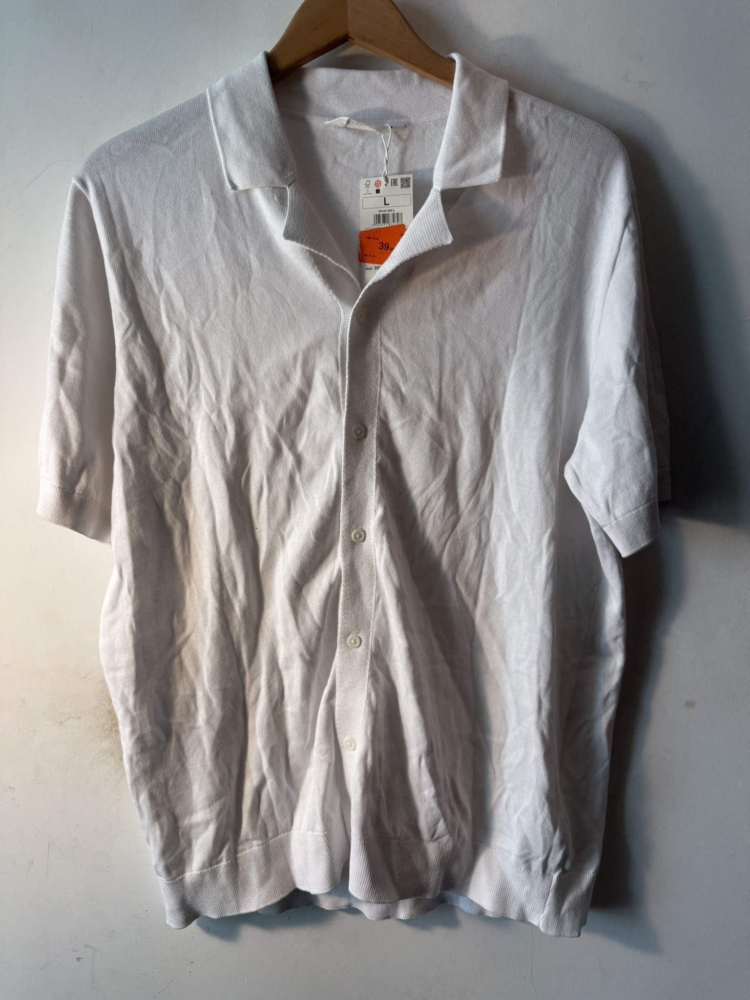
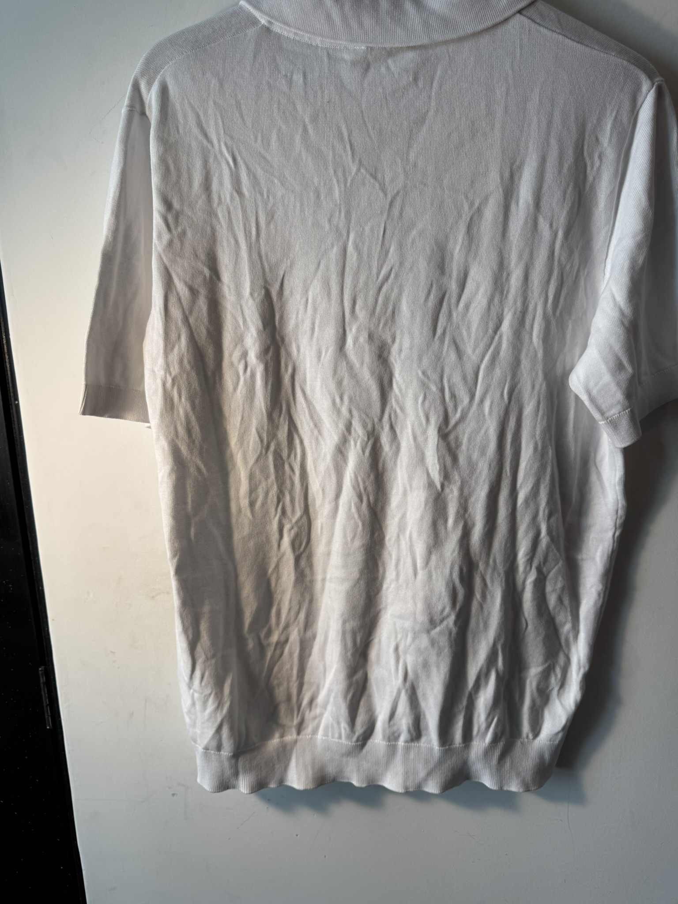
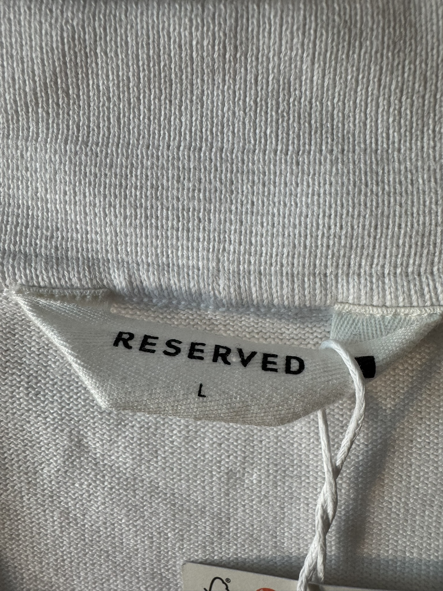

$200.00 MXN
Descripción
Camisa tipo polo de tejido de punto (knit) en color blanco, con cierre completo de botones y textura suave, fusionando la elegancia de una camisa con la comodidad de una playera.
Marca
Reserved
Tallas Disponibles
L
Comprar por WhatsApp 💬